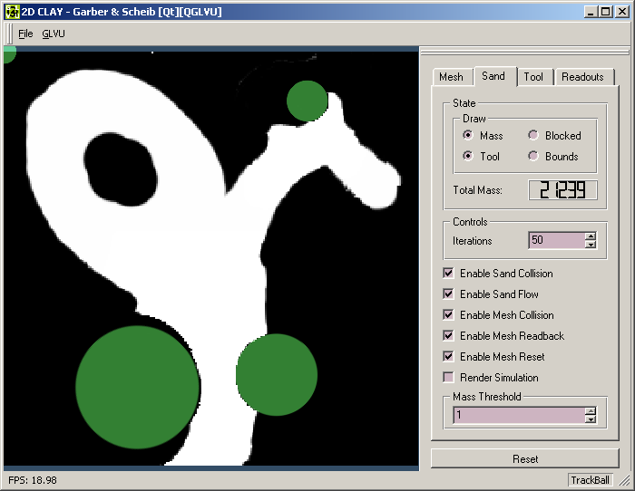

2D Clay, a Physically
Based Modeling Final Project
Sections
Overview
We have created a program to work with
clay, in 2 dimensions. This work is designed to prototype methods for a
3D clay deformation system. Below is a screen shot of our application:

The main part of the window shows clay
(in white) and tools (green). The tools are used to manipulate the clay.
We chose to reconstruct the attributes
of clay with a combination of local and global algorithms. The local algorithm
addresses the fluid like attributes of clay, near the points of tool collision.
Global methods are needed to make large deformations, such as bending an
entire arm.
The local deformations can be seen most
clearly at the top, where the small tool has been dragged against a skinny
arm of the clay. The clay "piles up" in front of the tool due to the local
deformation framework. The global deformations allow the entire arm to
be bent.
Tools and Collision
Detection
In our application tools are represented
as as circles of various sizes that can be moved with the mouse to interact
with the clay.
To compute collision between the clay
mass and the tools we use the standard graphics pipeline. The clay and
tools are rendered, with additive blending, to an off screen buffer (shown
below). The rendering window is set up so that each pixel corresponds to
exactly one cell in our discritization of the clay area. The resulting
image is read back.
For each cell in the clay buffer we can
now query the image to determine if it lies inside a tool, if it contains
clay mass, or both. The cells that both have mass and are inside the tool
are those that cause interactions that change the shape of the clay through
both local and global deformation (described below).
To prevent the tools from interpenetrating
the clay to easily, and give the appearance that the clay is dense, we
use a virtual coupling between the active tool and the mouse. This takes
the form of a damped spring pulling the tool to the mouse pointer location.
This spring is integrated using an Implicit
Euler formulation to allow stability even with high stiffness. To give
the illusion of clay density we add viscous drag, over and above air resistance,
to the tool for each pixel of clay that it intersects. Thus larger tools
push more slowly into the clay that smaller ones, which tend to cut the
clay easily.
Local Deformations
The figure above shows three stages of
a local deformation of the clay when impacted by the tool (green circle).
Notice that the deformation is confined to the area near the tool, and
the upper part of the clay remains still.
To support local deformations of the clay,
we maintain a buffer of the clay mass amount in each cell of a regular
sampling of the clay workspace. In 2D this can be visualized as a mass
texture, in which the brightness of the pixel indicates the mass of clay
in the cell. In the example scenario this sampling of space is done at
256 x 256 resolution. To perform a local deformation of the clay when impacted
by the tool we modify this mass buffer in two ways:
-
project the intersected mass out of the space
occupied by the tool
-
disperse mass so that all cells are within
the density limit
The first step involves traversing the cells
in the local area of each tool. For each cell that contains clay mass,
and is inside the tool, we simply move the cell's mass to the nearest cell
outside the tool along the radial direction. At the end of this step the
cells that border the tool may contain more mass than is allowed by our
density limit.
To fix this situation, we iteratively
traverse the clay cells in a growing region around the tool. Each cell
with excess mass propagates that mass to its neighbors. This propagation
algorithm is based on the concept of Cellular Automata, in the paper Free-Form
Shape Modeling by 3D Cellular Automata by Arata et al.
For maximum speed, this propagation is
done in two passes which mimic a bucket brigade. In the Forward pass,
we traverse the array in the forward direction and cells transition their
excess mass to the neighbors ahead of them in the buffer order. In the
Backward pass we traverse the cells in reverse order and cells transition
their excess mass to neighbors behind them in the buffer order.
A transition to a neighboring cell is
not allowed to occur if the neighbor is flagged as blocked by the tool
by our collision detection system. This prevents the mass form flowing
back into the tool.
This transition scheme pushed all excess
mass in one direction, then back in the other, until the excess mass lands
where it can be accepted without overflowing the cell location. This avoids
the situation in which neighboring cells will simply pass excess mass back
and forth to each other with each iteration and thus converge very slowly
to a stable state.
The disadvantage of this approach is that
excess mass can be propagated far in either the forward or backward direction,
instead of settling in a nearby open cell in the opposite direction. This
phenomenon produces unnatural diagonal tendencies in the mass flow. It
also quickly turns the local mass propagation into a global operation than
influences many far away cells.
To address the concern, we use a growing
propagation region that expands outward from the tool and limits the cellular
automata transitions to cells inside the region. This region expands in
a particular direction only if necessary. This expansion is done slowly
as the algorithm iterates ensuring that mass will tend to settle in nearby
open areas rather than those that are far away.
Even with this localizing region our algorithm
is able to disperse all excess mass in the region of a tool in few (10
- 15) iterations.
Global Deformation
Mesh
In this set of images, the global deformation
mesh can be seen. This mesh allows a collision at one point to cause deformations
over a large area.
The mesh connects mesh mass points. A
mass point is an intersection of edges of the mesh that is within the clay
mass. Edges which end in at least one mass point are drawn in red.
On the left, the mesh is undeformed. A
tool is colliding with the clay volume. Two types of collisions affect
the mesh:
-
any mass point on the mesh is moved the shortest
distance out of the tool.
-
clay in collision with a tool move is analyzed
to find the shortest distance out. Each mass point on a square containing
clay in collision is moved by the maximum clay penetration.
The combination of these two collision types
provides a way for the mesh to be moved when a tool collides. The first
method handles deep penetrations. The second provides for slight collisions,
where clay is in collision but a mass point is not.
The result of a collision is a few moved
mass points. To enable the entire mesh to respond, an iterative constraint
solver is used.
Each edge is constrained to a constant
length. Each square is constrained to a constant volume. For each iteration,
the mass point constraints are enforced, but doing so affects the neighbors.
Subsequent iterations converge to a solution.
We typically used 50 iterations. This
computation was fast, and the iteration count more than sufficient to relax
the entire mesh. We typically use a 30 by 30 mesh for the entire workspace.
|
|
|